This tutorial shows how to determine the self noise of an instrument
though the comparison of the output of two instruments operating
side-by-side.
This is an implementation of the work by G. Holcomb at the USGS:
Holcomb, G. L. (1989).
A Direct Method for Calculating Instrument
Noise Levels in Side-by-Side Seismometer Evaluations,
USGS Open-File Report
89-214
The concept is that the output of an instrument consists of both the
effect of actual ground motion and internal instrumental noise. If two
isntruments are operated side-by-side, then one has sufficient
information to separate the ground motion and the two instrumental
components.
All codes and sample data sets are contained in the tar-ball
selfnoise.tgz
Download this file and unpack using the command
gunzip -c selfnoise.tgz | tar xf -
This will create a directory SELFNOISE with the following contents (file listing)
The most important file is the 00README
which tells you how to compile
and run the programs.
Two data sets are provided which compare the 00 and 01 data stream for
the LHZ component at ANMO and the LHZ, LHN and LHE components at
KMI. The are contained in the directories ANMO.TEST and
KMI.TEST. Each directory has a SEED volume for 24 hours of
continuoous data from the stations. The SEED volumes were obtained from
IRIS.
The shell script DOCROSS does the following:
1, unpacks the SEED volume
2. applies the technique to the LHZ for ANMO and
LHZ, LHN and LHE for KMI
3. plots the results:
This compares two instruments. For each sensor, the figures give the
gound noise esitmate (triangle), total noise estimate (light blue line,
the instrument self noise (red circles) and the low and high noise
model bounds. For this day we can compare the total noise
estiamte of sensor 2 (location code 10) to the plots available from
USGS/IRIS as a check on our code.
| Sensor 1 |
Sensor 2 |
Coherency |
| 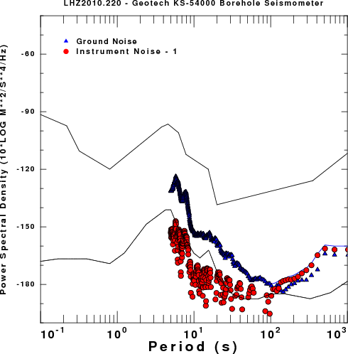 |
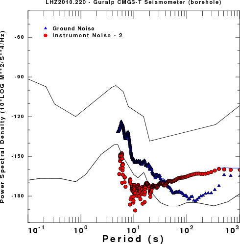 |
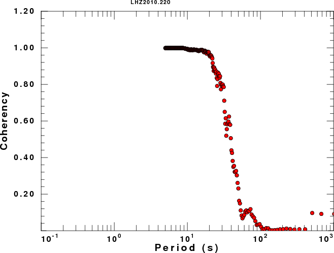 |
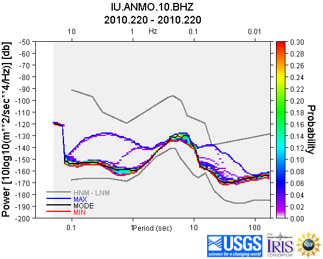
| Sensor 1 |
Sensor 2 |
Coherency |
| 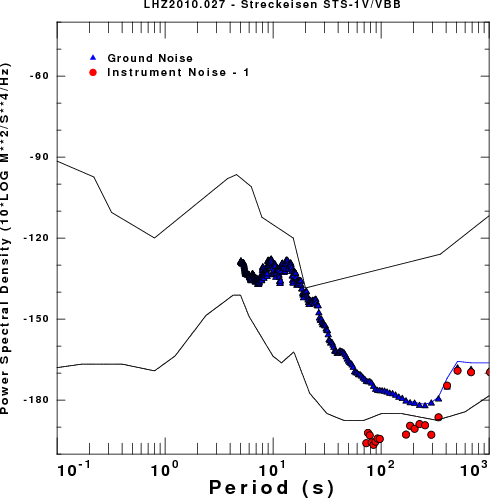 |
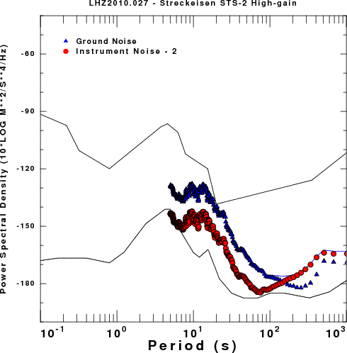 |
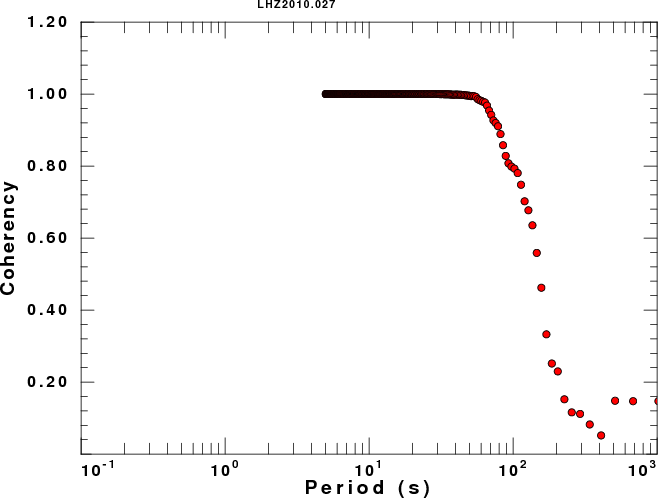 |
| 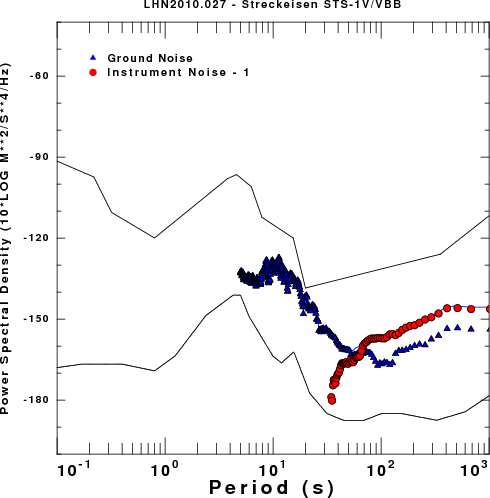 |
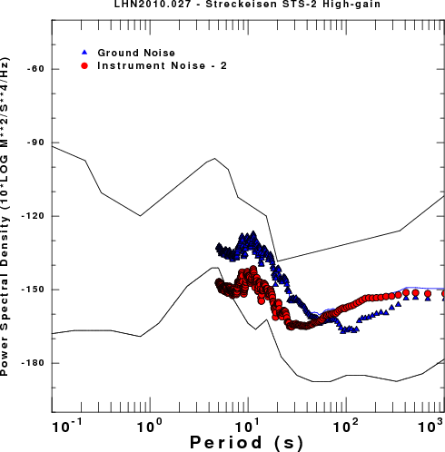 |
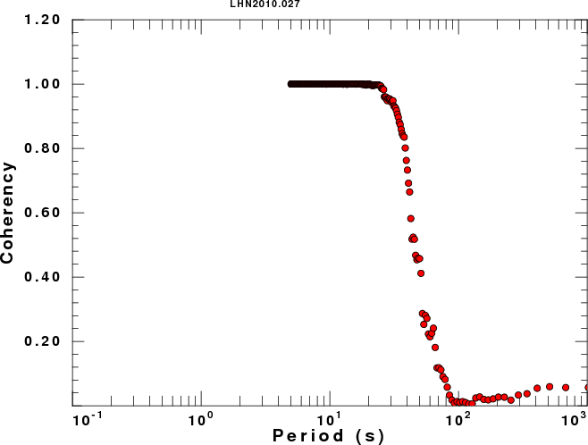 |
| 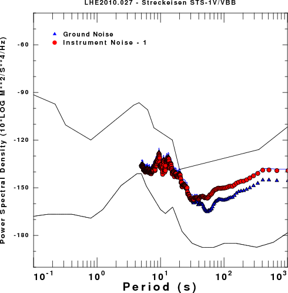 |
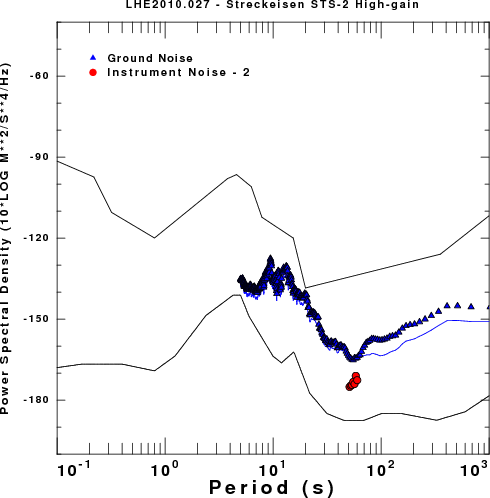 |
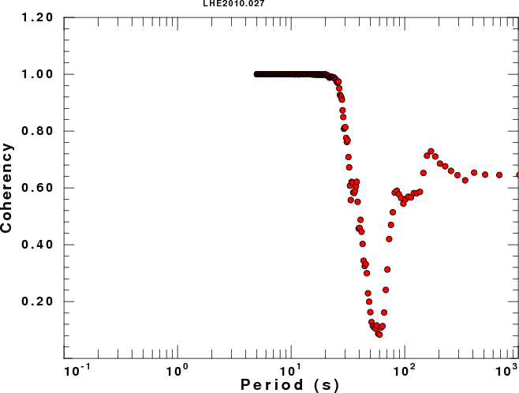 |